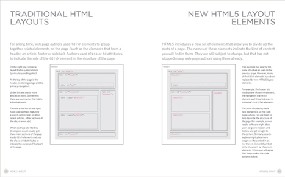
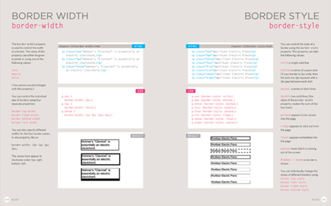
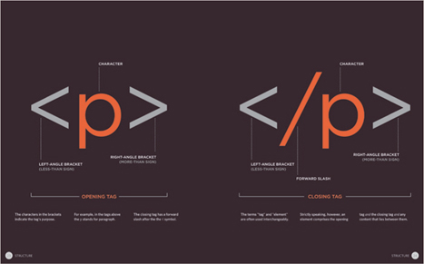
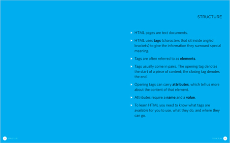

Firstly, thank you for picking up this book. It has been written with two very different types of people in mind:
The only things you need in order to use this book are a computer with a web browser and a text editor (such as Notepad, which comes with Windows, or TextEdit, which comes with Macs).
Introduction pages come at the beginning of each chapter. They introduce the key topics you will learn about.

Background pages appear on white; they explain the context of the topics covered that are discussed in each chapter.
Example pages put together the topics you have learned and demonstrate how they can be applied in each.

Reference pages introduce key pieces of HTML & CSS code. The HTML code is shown in blue and CSS code is shown in pink.

Diagram and infographics pages are shown on a dark background. They provide a simple, visual reference to topics discussed.

Summary pages come at the end of each chapter. They remind you of the key topics that were covered in each chapter.
Many books that teach HTML and CSS resemble dull manuals. To make it easier for you to learn, we threw away the traditional template used by publishers and redesigned this book from scratch.
At work, when people look at my screen and see it full of code, it's not unusual to get a comment about it looking very complicated or how clever I must be to understand it. The truth is, it's not that hard to learn how to write web pages and read the code used to create them; you certainly don't have to be a “programmer.”
Understanding HTML and CSS can help anyone who works with the web; designers can create more attractive and usable sites, website editors can create better content, marketers can communicate with their audience more effectively, and managers can commission better sites and get the best out of their teams.
I've focussed on the code you need to use 90% of the time and omitted the code that you would rarely see even if writing websites is your full time job. By the end of the book, if you come across the other 10% you will be able to Google it to find out what it means quickly and easily.
I have also added practical information on topics I am commonly asked about, such as how to prepare images, audio and video for the web, how to approach the design and build of a new site, how to improve your rankings in search engines (SEO), and how to use Google Analytics to learn about visitors to your site.
In order to teach you about creating web pages, this book is divided into three sections:
We will spend the first chapter looking at how HTML is used to create web pages. You will see that you start by writing down the words you want to appear on your page. You then add tags or elements to the words so that the browser knows what is a heading, where a paragraph begins and ends, and so on.
The rest of this section introduces the tags you have at your disposal to create web pages, grouped into chapters on: text, lists, links, images, tables, forms, video audio and flash, and miscellaneous elements.
I should warn you that the examples in the first nine chapters are not exciting to look at, yet they are the foundation of every web page. The following chapters on CSS will show you how to make your pages look a lot more interesting.
We start this section with a chapter that explains how CSS uses rules to enable you to control the styling and layout of web pages. We then go on to look at the wide variety of CSS properties you can use in your CSS rules. These properties generally fall into one of two categories:
Presentation: How to control things like the color of text, the fonts you want to use and the size of those fonts, how to add background colors to pages (or parts of a page), and how to add background images.
Layout: How to control where the different elements are positioned on the screen. You will also learn several techniques that professionals use to make their pages more attractive.
We end up with some helpful information that will assist you in building better websites.
We look at some new tags that will be introduced in HTML5 to help describe the structure of your pages. HTML5 is the latest version of HTML (still under development at the time of writing). Before learning about these elements, you need a good grasp of how CSS is used to control the design of web pages. There is a chapter that talks you through a design process that you might like to follow when creating a new website.
Finally, we end up looking at topics that will help you once you have built your site, such as putting it on the web, search engine optimisation (SEO) and using analytics software to track who comes to your site and what they are looking at.
Before we look at the code used to build websites it is important to consider the different ways in which people access the web and clarify some terminology.
People access websites using software called a web browser. Popular examples include Firefox, Internet Explorer, Safari, Chrome, and Opera.
In order to view a web page, users might type a web address into their browser, follow a link from another site, or use a bookmark.
Software manufacturers regularly release new versions of browsers with new features and supporting new additions to languages. It is important, however, to remember that many computer owners will not be running the latest versions of these browsers. Therefore you cannot rely on all visitors to your site being able to use the latest functionality offered in all browsers.
You will learn how to tell which browsers visitors use to access your website in Chapter 19.
When you ask your browser for a web page, the request is sent across the Internet to a special computer known as a web server which hosts the website.
Web servers are special computers that are constantly connected to the Internet, and are optimized to send web pages out to people who request them.
Some big companies run their own web servers, but it is more common to use the services of a web hosting company who charge a fee to host your site.
People are accessing websites on an increasing range of devices including desktop computers, laptops, tablets, and mobile phones. It is important to remember that various devices have different screen sizes and some have faster connections to the web than others.
Screen readers are programs that read out the contents of a computer screen to a user. They are commonly used by people with visual impairments.
In the same way that many countries have legislations that require public buildings to be accessible to those with disabilities, many laws have also been passed that require websites be accessible to those with disabilities.
Throughout this book you will see several references to screen readers. These notes will help ensure that the sites you create are accessible to people who use such software.
It is interesting to note that technologies similar to those employed by screen readers are also being used in other areas where people are unable read a screen, such as when they are driving or jogging.
All websites use HTML and CSS, but content management systems, blogging software, and e-commerce platforms often add a few more technologies into the mix.
When you are looking at a website, it is most likely that your browser will be receiving HTML and CSS from the web server that hosts the site. The web browser interprets the HTML and CSS code to create the page that you see.
Most web pages also include extra content such as images, audio, video, or animations and this book will teach you how to prepare them for use on the web and then how to insert them into your web pages.
Some sites also send JavaScript or Flash to your browser, and you will see how to add JavaScript and Flash in your web pages. Both of these technologies are advanced topics that you can go on to learn more about once you have mastered HTML and CSS, if you want to.
Small websites are often written just using HTML and CSS.
Larger websites — in particular those that are updated regularly and use a content management system (CMS), blogging tools, or e-commerce software — often make use of more complex technologies on the web server, but these technologies are actually used to produce HTML and CSS that is then sent to the browser. So, if your site uses these technologies, you will be able to use your new HTML and CSS knowledge to take more control over how your site looks.
Larger, more complex sites like these may use a database to store data, and programming languages such as PHP, ASP.Net, Java, or Ruby on the web server, but you do not need to know these technologies to improve what the user sees. The skills you'll learn in this book should be enough to help you on that road.
Since the web was first created there have been several versions of HTML and CSS — each intended to be an improvement on the previous version.
At the time of writing this book, HTML5 & CSS3 were still being developed. Although they had not been finalized, many browsers were already supporting some features of these languages and a lot of people were using the latest code on their websites. I have therefore chosen to teach you these latest versions.
Because HTML5 and CSS3 build on previous versions of these languages, learning these means you will also be able to understand the earlier versions of them. I have added clear notes when the code is new and also when it might not work in older browsers.
When you visit a website, the web server hosting that site could be anywhere in the world. In order for you to find the location of the web server, your browser will first connect to a Domain Name System (DNS) server.
On this page you can see examples that demonstrate how the web server that hosts the website you are visiting can be anywhere in the world. It is the DNS servers that tell your browser how to find the website.
On the right you can see what happens when a web user in England wants to view the website of the Louvre art gallery in France which is located at www.louvre.fr. Firstly, the browser in Cambridge contacts a DNS server in London. The DNS server then tells the browser the location of the web server hosting the site in Paris.